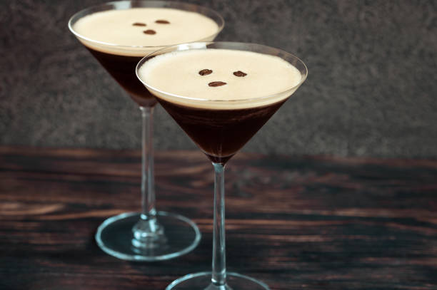

Espresso
Espresso - A rich, concentrated coffee brewed by forcing a small amount of nearly boiling water through finely-ground coffee beans. The essence of coffee in its purest form.
Product Specifications
- Feature 1: Rich and Bold Flavor: A strong, full-bodied coffee with intense flavor and aroma
- Feature 2: Single Shot (1 oz): A standard espresso shot size, perfect for a quick energy boost
- Feature 3: Versatile Base: Can be enjoyed on its own or used as a base for other coffee drinks like lattes and cappuccinos